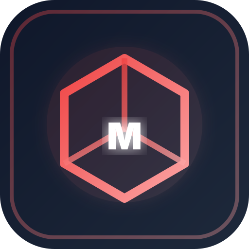

MultiverseCreatures
Model Viewer
Loading…
Front
Side
Back
Top
0.0 s
0.25×
0.5×
1×
2×
Loading models…
Drag to orbit · right-drag to pan · scroll to zoom
Keyboard shortcuts
Space
Play or pause the animation
←
→
Step the animation a tick
↑
↓
Previous or next model
F
Frame the model
1
–
4
Front, side, back and top views
A
Turn slowly
G
Floor grid
P
Save a screenshot
/
Search the models
Close